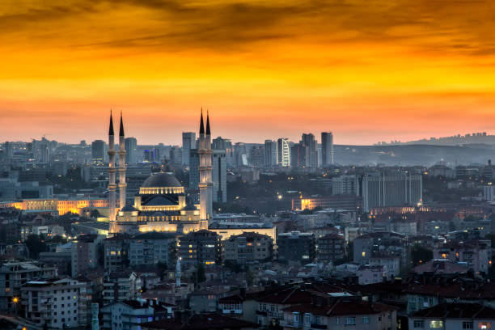
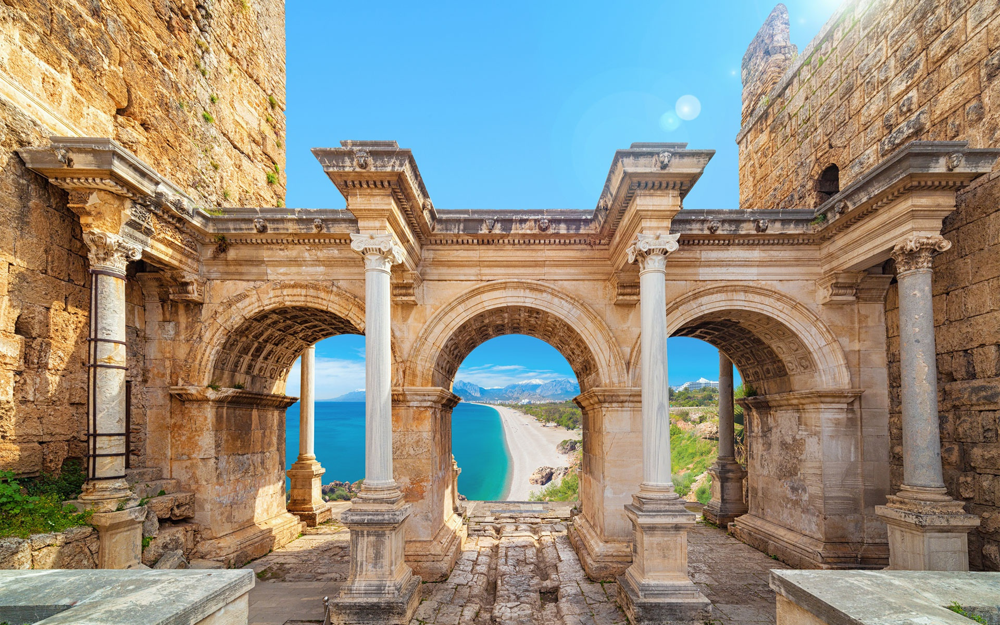
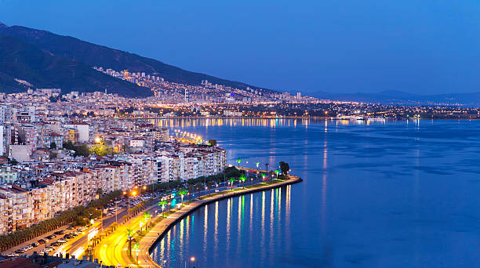

Istanbul
Istanbul This urban cultural melting pot is something you must visit at least once in your lifetime. Who hasn’t heard of famous Hagia Sophia, the magnificent church turned into a mosque and a symbol of Constantinople or Blue Mosque built in the 17th century? The Grand Baazar, one of the largest covered markets in the world where you can buy everything, from jewelry and spices to carpets and antiques. Historically rich metropolis offers some of the best views in Turkey during sunset or the Galata Tower.

Ankara
Ankara is Turkish capital, The most important figure of the city is well-known Atatürk, whose legacy is undeniable, which is best observable in Mausoleum of Atatürk, a huge tomb and memorial to the first president of the new Republic of Turkey who declared Ankara as the capital. And the walking tour of the historical Old Quarters in your visit, because strolling through narrow, cobbled streets surrounded by old red-roofed Ottoman houses is something definitely worth experiencing.

Antalya
Antalya is the most popular tourist region in Turkey. The best way to discover the beauty of the region is to use a cable car to travel up Mount Tahtali, from where you can marvel at the stunning panoramic views of the coastline. After the climb, check out the ruins of Phaselis and gorgeous beaches nearby. For sun lovers, Lara beach is the best destination enjoythe crystal blue sea and the Antalya sand festival.

Izmir
Izmir The coastal Turkish city a cruise-ship ports of call on the Aegean Sea and an excellent place to Spend your days browsing the streets and visiting some of the most extensive Roman ruins outside Pompeii. Don’t forget to include Pamukkale in your tour, an amazin geographical phenomenon, unique in the world. It is a mini plateaux with the hot spring water flowing down from the top of the mountain for health. Also, the Izmir Clock Tower is a must-see.